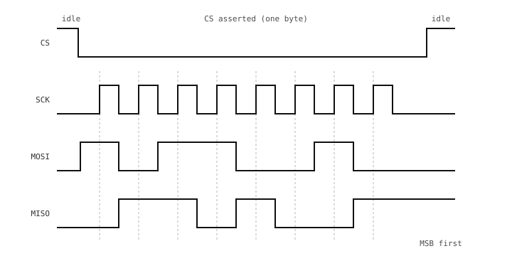

3.21. יסודות SPI¶
SPI (Serial Peripheral Interface) הוא אפיק טורי סינכרוני שנועד לקישורים מהירים לטווח קצר בין בקר אחד להתקן היקפי אחד או יותר על אותו לוח. זהו הממשק התקני עבור כרטיסי SD, צגים, זיכרון פלאש (flash), ADC ו-DAC, ומגוון רחב של חיישנים.
בעוד שב-UART לא היה שעון משותף וזמני התזמון שוחזרו מקו הנתונים עצמו, ב-SPI רץ קו שעון לצד קווי הנתונים. הבקר מניע את השעון בכל קצב שהוא חפץ, וכל התקן אחר על האפיק דוגם את הנתונים בסנכרון עם אותו שעון. אין ניחוש קצב בָּאוּד (baud rate) ואין תקורת מסגור – רק קצוות שעון וביטים.
3.21.1. ארבעת הקווים¶
אפיק SPI דו-כיווני מלא (full-duplex) כולל ארבעה קווים:
SCK (שעון טורי). מונע על ידי הבקר. כל ביט נדגם פנימה או החוצה בקצה של אות זה.
MOSI (פלט בקר, קלט היקפי). קו הפלט של הבקר; ההתקן ההיקפי דוגם ממנו ביטים.
MISO (קלט בקר, פלט היקפי). קו הפלט של ההתקן ההיקפי; הבקר דוגם ממנו ביטים.
CS (בחירת שבב), המכונה לעיתים SS (בחירת התקן היקפי). קו נפרד לכל התקן היקפי. הבקר מושך את CS לערך נמוך כדי להתחיל טרנזקציה ובחזרה לערך גבוה כדי לסיים אותה; כל התקן היקפי שה-CS שלו אינו פעיל מתעלם מהאפיק לחלוטין ומפסיק להניע את פלט ה-MISO שלו.

בית SPI אחד: CS יורד לנמוך כדי לבחור את ההתקן ההיקפי, SCK פולט שמונה ביטים, ו-MOSI ו-MISO מעבירים בית אחד כל אחד בכיוונים מנוגדים.¶
כל קצה שעון מזיז ביט אחד בכל כיוון באותו זמן. פעימת SCK יחידה שולחת בו-זמנית ביט אחד על MOSI ומקבלת ביט אחד על MISO – SPI הוא דו-כיווני מלא (full-duplex) ברמת החוט. התוכנה אינה חייבת להשתמש בשני הכיוונים: טרנזקציות לכתיבה בלבד ולקריאה בלבד נפוצות, כאשר הקו שאינו בשימוש מתעלמים ממנו או שומרים אותו גבוה.
3.21.2. קוטביות ופאזה של השעון¶
שני ביטי תצורה קובעים בדיוק איזה קצה שעון מזיז נתונים:
קוטביות שעון (
polarity, לעיתיםCPOL) – מצב המנוחה של SCK.0משמעו שהשעון במנוחה נמוך ופולט גבוה;1משמעו שהשעון במנוחה גבוה ופולט נמוך.פאזת שעון (
phase, לעיתיםCPHA) – איזה קצה דוגם את הנתונים.0דוגם בקצה הראשון של כל פעימת שעון (הקצה המוביל);1דוגם בקצה השני (הקצה הנגרר).
יחד אלה נותנים ארבעה מצבים (modes), המכונים מקובלות Mode 0 עד Mode 3. Mode 0 (polarity=0, phase=0) הוא הנפוץ ביותר וברירת מחדל בטוחה עבור התקנים לא ידועים.
הכלל המכריע הוא ששני הקצוות חייבים להסכים על המצב. מצבים בלתי תואמים נותנים נתוני זבל גם אם קווי השעון והנתונים מחווטים נכון; אם התקן מחזיר שטויות בטרנזקציה הראשונה, המצב הוא הדבר הראשון שכדאי לבדוק.
3.21.3. התקנים היקפיים מרובים¶
כמה התקנים היקפיים יכולים לחלוק את אותם קווי SCK, MOSI ו-MISO כל עוד לכל אחד מהם קו CS משלו המונע על ידי הבקר:
כל ההתקנים ההיקפיים רואים את אותו שעון ונתונים, אך כל אחד עוקב אחר ה-CS שלו. כאשר CS אינו פעיל (גבוה), התקן היקפי מתעלם מ-SCK ומ-MOSI לחלוטין ומשאיר את MISO במצב עכבה גבוהה כך שאינו נאבק עם התקנים אחרים על הקו.
הבקר מפעיל בדיוק CS אחד בכל פעם, מריץ את הטרנזקציה, ומשבית את CS כדי לשחרר את האפיק.
מיקרו-בקר עם בלוק SPI חומרתי יחיד יכול לתקשר עם כמות התקנים היקפיים כמספר פיני ה-GPIO הפנויים שיש לו לפנות עבור קווי CS – אין כתובות על האפיק עצמו.
3.21.4. חוזקות וחולשות¶
החוזקות והחולשות של SPI נובעות שתיהן מתכנונו:
מהיר. עשרות מגה-הרץ ניתנים להשגה על עקבות קצרים עם תרגום רמות פשוט. קוראי כרטיסי SD וצגי SPI משתמשים בזה.
פשוט ברמת החוט. אין כתובות, אין אישורים, אין תנאי התחלה/עצירה מיוחדים – רק ביטים על החוטים המסונכרנים לשעון.
רעב לפינים. שלושה קווים משותפים בתוספת CS אחד לכל התקן היקפי. לוח עם חמישה התקני SPI משתמש בשמונה פינים (שלושה + חמישה).
טווח קצר. SPI מניח קצוות נקיים ומהירים, מה שמשמעו עקבות קצרים על אותו לוח. עבור קישורים ארוכים יותר, I2C או אחד מהאפיקים הממוסגרים מתאים יותר.